そろそろ記憶もだいたい吹っ飛んだころかと。さて復習やっていくよ。
えっ本当になんも覚えてないけど
私もバート語を忘れるため、たまにバートさん(@bhaataan_zepha)に教わったりしているhttps://t.co/eh7lxLz5ny
— .sozysozbot.@hsjoihs@jekto.vatimeliju (@sosoBOTpi) 2019年5月27日
第二課をしてから既に3週間弱経過している。そろそろ第三課をやるべき。
— バートさん(bhátaim) (@bhaataan_zepha) 2019年5月27日
えっもうそんなに経ったのか…
— .sozysozbot.@hsjoihs@jekto.vatimeliju (@sosoBOTpi) 2019年5月27日
...
ということで待たない。第一問。まずは「文化」を書いてもらおう。
えーと。
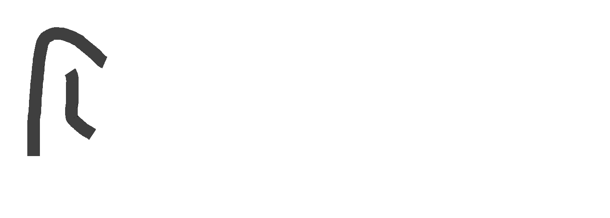
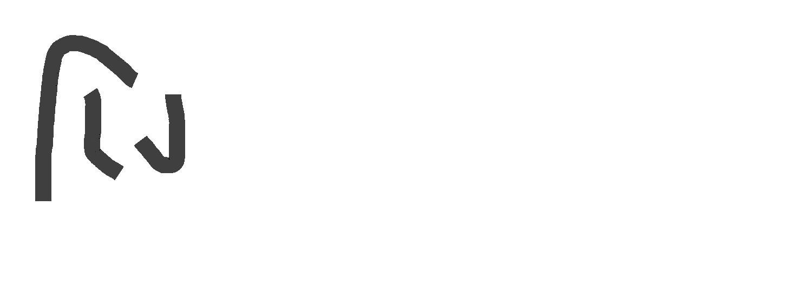
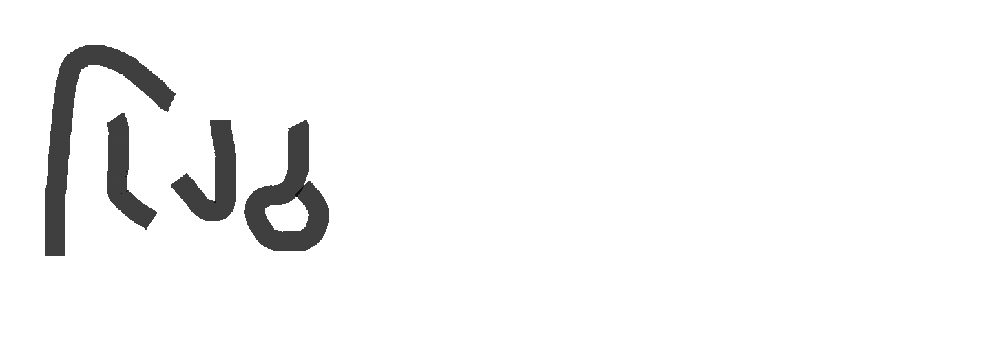
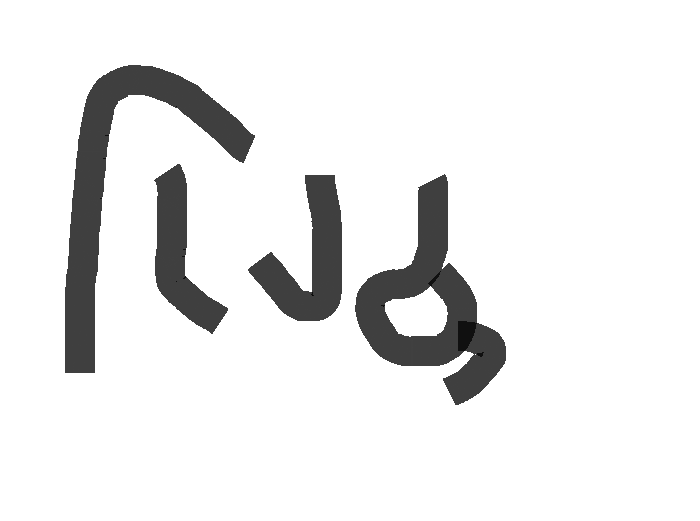
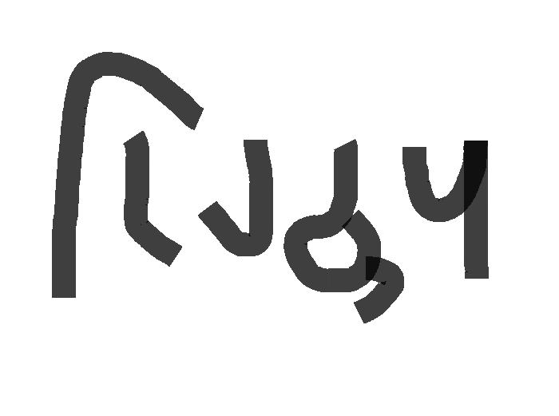
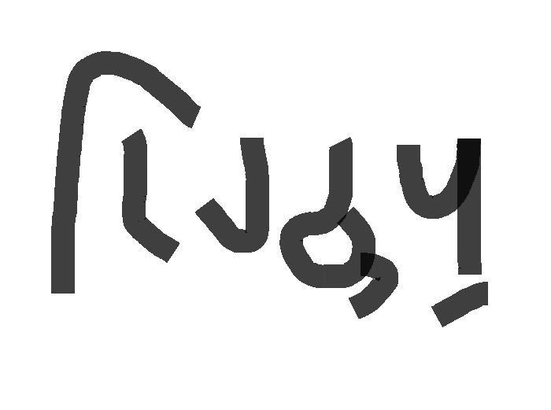
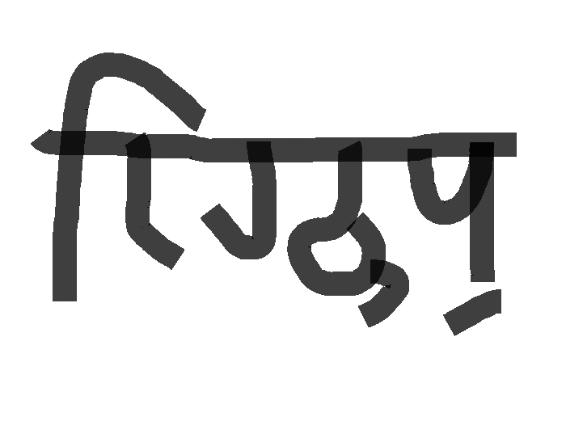
第二問。「冠光」の第一行のパイグ語歌詞を答えよ。
えっこれ「バート文字・バート語文法速習」では。
答えよ。
えーっと… io ai2 a aik2 bo1 be nim2 だっけ。
ちなみに二行目以降は？
えー guk2 aik2 ie pai2 ge hia1 mok1 …か？
第三問。 と のうち、文法的に正しい方を選び、解釈せよ。
えーとbho…じゃない、bhátabohabáta. と bhátabohabhá. で、えー -boh- は「～するつもりである」の状態動詞だから、過去分詞 bhátabohabáta. が正しくて、「彼は喋るつもりである」とか「彼は話そうとしている」か。
あれ、「彼はAという言語を話せるようになろうとしている」みたいなのを言いたいときにはどうするんだろう。 -boh- って動作動詞しか取れないみたいな制約ってあったっけな。
第四問。「全ての布」をバート文字で書け。
「全ての」の後は単数なので、bhá háta だよな。
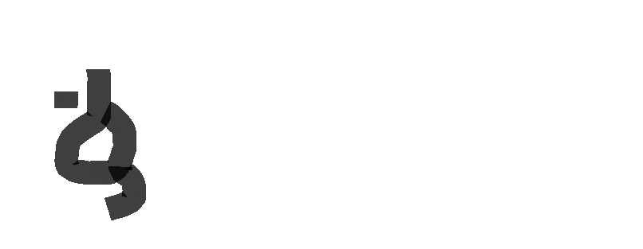
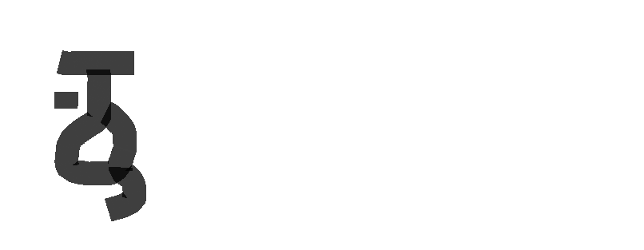
えっとh…ああhorabátがアレだから、
（やはり、この「単語に結びつけて覚えさせる」方針は良いな。j.vがその単語を毎回数十回ほど指で書いているのも効果的）
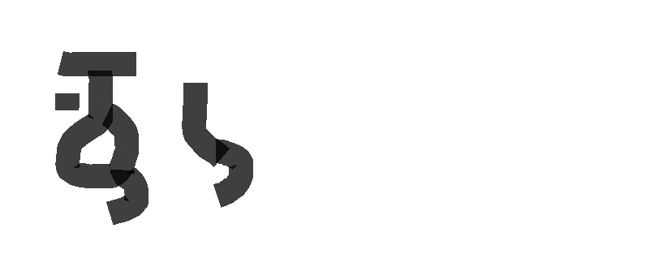
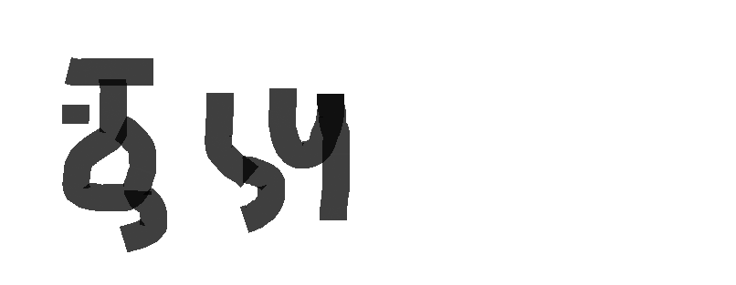
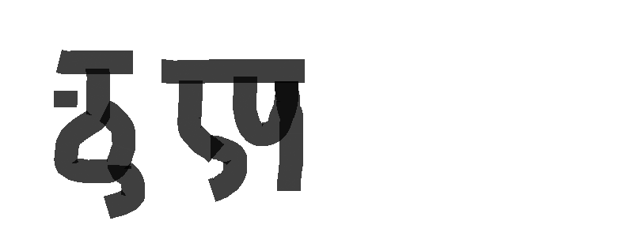
第五問。 と を解釈せよ。
えーと bohabáta. と bohabhá. えー動作動詞「行く」の場合はそれぞれ過去形と現在形だから、「彼は行った。」と「彼は行く。」よな。 瞬間動詞…「～を去る」だっけ、えーえっとなんもわからん。終止詞 bohabhá. は現在形を作るんだっけ？
第六問。「バート人たち」にhínaを付けるとどう縮約するか。
bhátína
第二課の復習が2019/05/30で、今が2019/06/11。
ごめんなさい。
もはや第二課で復習した内容も抜けているのではあるまいか。
実際微妙に抜けてそう。
いや、見返してきたけどそんなに抜けてなかった
あの。
はい。
本日って何日でございましょうか。
2019年6月28日です…
…
…
もういいや、「第三課は復習のみの回だった」という後付け設定にしておく。
本当に申し訳ないです。
あっちなみに言いそびれたけど、「全て」はbeではなくbe1、guk2 aik2 ieではなくguk2 aik2 ua。あと瞬間動詞は過去分詞を取らなくて、終止詞の場合は「今がまさに行為が起こった瞬間である」という稀な意味になる。「部屋を出た瞬間に爆発が起こった」みたいな。
あっ了解です